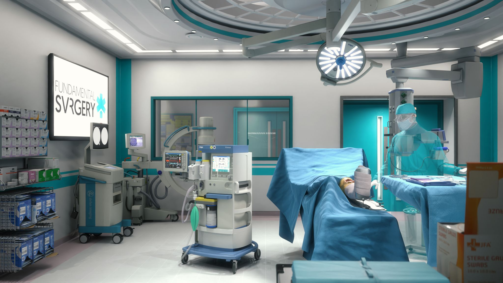
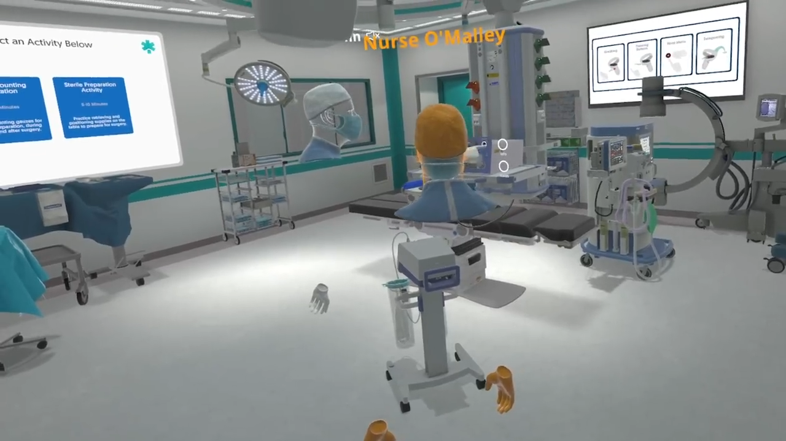
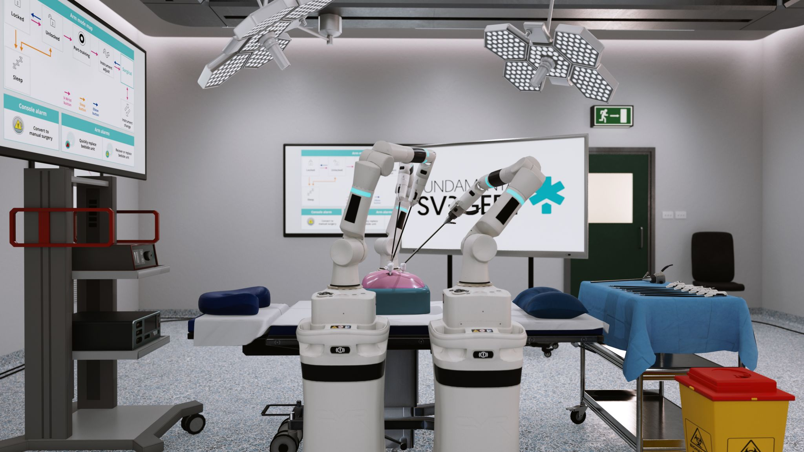
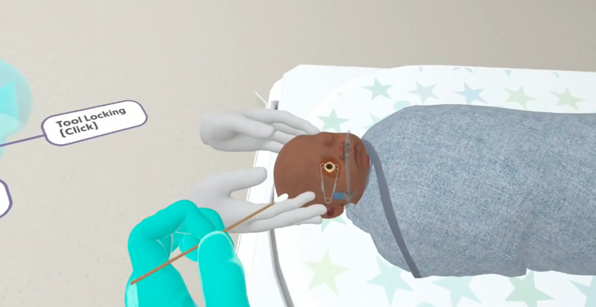
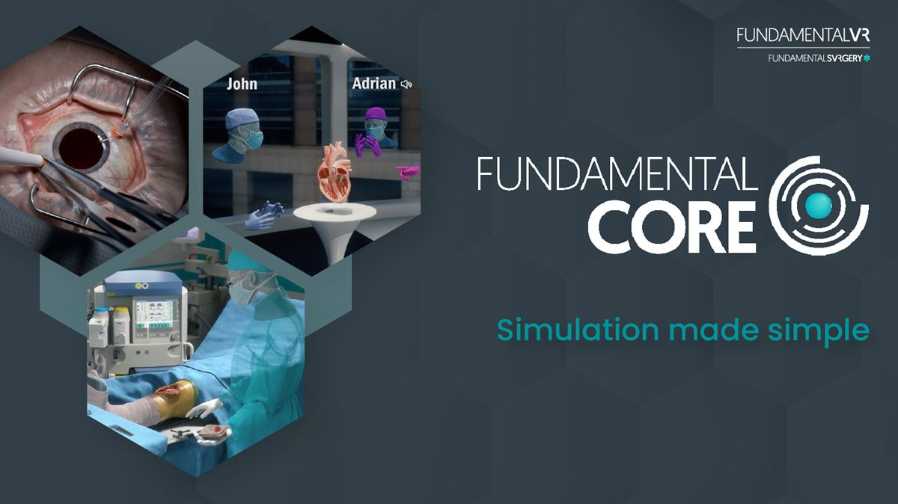
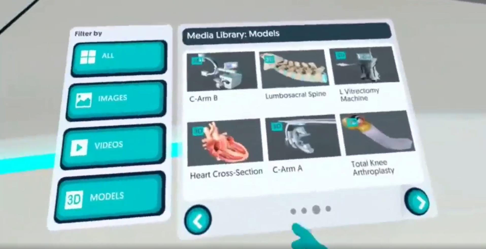

Developed and contributed to 4 award-winning Metaverse VR Simulations for surgical training for multi user applications. Implemented a Content Management System for codebase used by other developers and created documentation. Collaborated with designers to implement and refine features, UX and user interfaces. Optimized performance to maintain a consistent 60 FPS for app submission. Identified and resolved bugs with thorough testing with QA to ensure a polished product. Past Roles Include: Associate Software Engineer, Software Engineer Intern
     